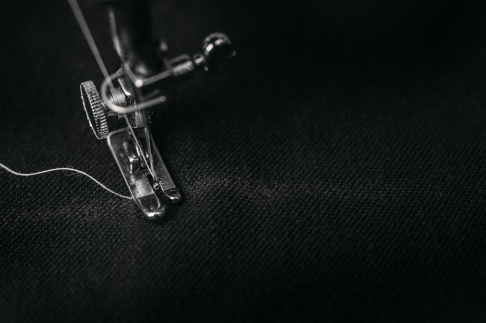

i.
Robes de mariage
Ajustements et retouches pour le grand jour, essai après essai.
Robes de mariage et de soirée, retouches de tous genres, cuir, maillots et confection sur mesure. Même les miracles.

Ajustements et retouches pour le grand jour, essai après essai.

Bal, gala, cocktail : une tenue parfaitement ajustée.

Ourlets, cuir, maillots de bain, pour dame et homme.

Une confection créée à partir de vos idées.
Apportez-le. Isabelle vous dira ce qui est possible, avec franchise et à prix raisonnable.
Entrez la date du mariage. On vous dit quand prévoir chaque essayage.
« Gentille, douce, prix très raisonnable et réellement à l'écoute de mes envies. »
« Accueil chaleureux, j'y retournerai ! »